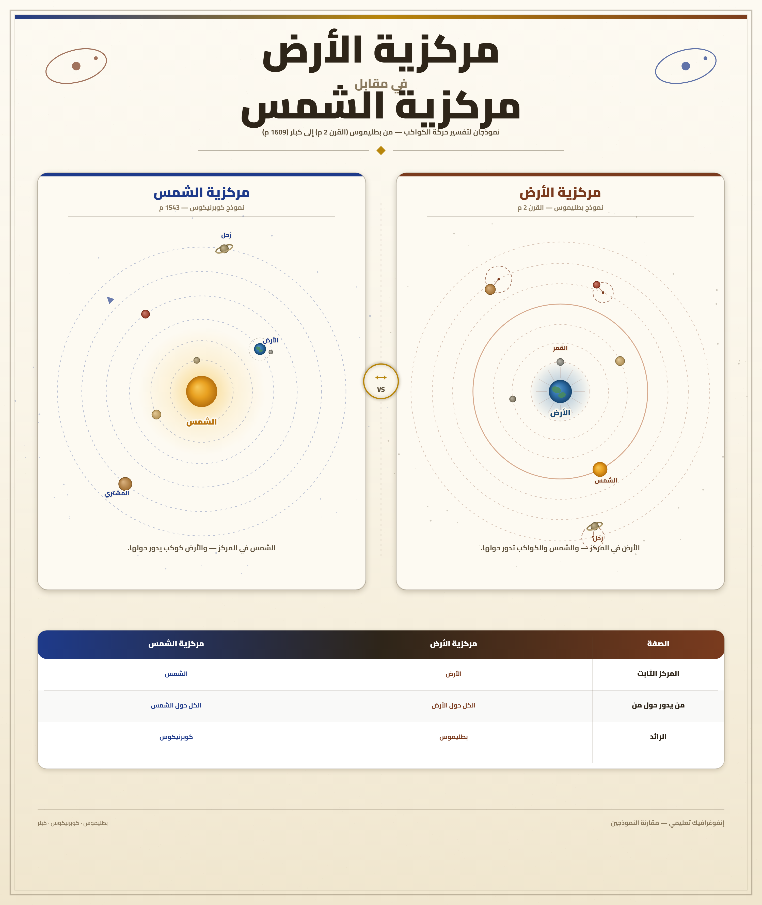
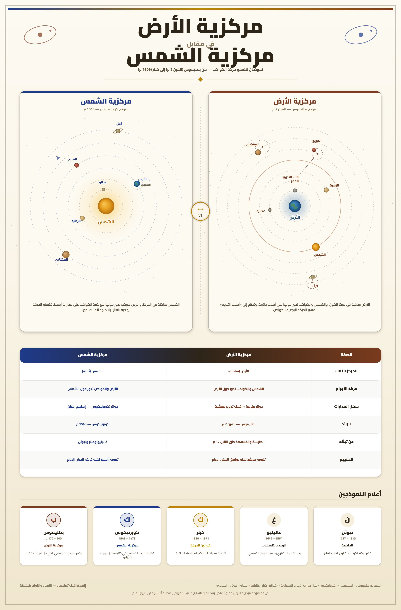

تمارين – نيكولا كوبرنيك (دراسة شخصية علمية)
- مركزية الأرض (Le géocentrisme):
- نظرية فلكية وضعها العالم الإغريقي بطليموس في القرن II م في كتابه "المجسطي"، تقوم على أن الأرض ثابتة وتقع في مركز الكون، وأن الكواكب والنجوم تدور حولها، وتترتّب حسب بعدها عن سطح الأرض (القمر، عطارد، الزهرة، الشمس، المريخ، المشتري، زحل، ثم النجوم الثابتة). وقد توافقت هذه النظرية مع فلسفة أرسطو والتصور الديني للكنيسة، وسادت في أوروبا طوال أربعة عشر قرنًا.
- مركزية الشمس (L'héliocentrisme):
- نظرية فلكية جديدة قدّمها نيكولاس كوبرنيكوس في كتابه "دوران الأجرام السماوية" (1543)، تقوم على أن الشمس في مركز الكون، وأن الأرض كوكب متحرك يدور حولها مع بقية الكواكب. وتخضع الأرض لثلاث حركات: يومية حول محورها، وسنوية حول الشمس، وارتجاجية (تغيّر ميل المحور). وقد مثّلت قطيعة مع التصور القديم للكون.
- الحركة الظاهرية للنجوم:
- الحركة التي يبدو للراصد على سطح الأرض أن النجوم تقوم بها في السماء. وقد بيّن كوبرنيكوس أنها ليست إلا نتيجة بصرية ناتجة عن الحركة الحقيقية للأرض (حركتها اليومية والسنوية)، وليست حركة فعلية للنجوم في حدّ ذاتها، خلافًا لما كان يعتقده بطليموس.
- الثورة العلمية الحديثة:
- حركة علمية انطلقت من أعمال نيكولاس كوبرنيكوس في القرن XVI، وامتدّت على يد كبلر وغاليليو ونيوتن في القرنين XVII وXVIII. أرست أسس العلم الحديث القائم على الرصد والتجربة والاستنتاج الرياضي بدلًا من التسليم للسلطة الدينية، وحرّرت العقل الأوروبي من قيود الكنيسة.
| المرحلة | الفترة | المدّة (سنة) |
|---|---|---|
| التكوين ببولندا (تورون وكراكوف) | 1473-1496 | 23 |
| الدراسة بإيطاليا (بولونيا، بادوفا، فيرارا) | 1496-1503 | 7 |
| العمل الفلكي في فرومبورك (تأليف ونشر) | 1503-1543 | 40 |
المصدر: معطيات الدرس حول محطات حياة كوبرنيكوس


يمثّل الرسمان تصوّرين متقابلين للكون:
1) التصور القديم (مركزية الأرض – بطليموس): الأرض ثابتة في مركز الكون، والكواكب والنجوم تدور حولها في مدارات دائرية مرتّبة حسب بعدها عن سطح الأرض (القمر، عطارد، الزهرة، الشمس، المريخ، المشتري، زحل، ثم النجوم الثابتة). يخضع هذا التصور لفلسفة أرسطو وللاهوت الكنيسة.
2) التصور الجديد (مركزية الشمس – كوبرنيكوس): الشمس في مركز الكون، والأرض كوكب متحرك يدور حولها مع بقية الكواكب. وتخضع الأرض لثلاث حركات: يومية حول محورها (تعاقب الليل والنهار)، وسنوية حول الشمس (تعاقب الفصول)، وارتجاجية (تغيّر ميل المحور). وترتيب الكواكب من الشمس: عطارد، الزهرة، الأرض (ويتبعها القمر)، المريخ، المشتري، زحل، ثم النجوم الثابتة.
3) أهم الفروق:
- مركز الكون: الأرض (قديم) ← الشمس (جديد).
- حركة الأرض: ثابتة (قديم) ← ثلاث حركات (جديد).
- الحركة الظاهرية للنجوم: حركة حقيقية (قديم) ← نتيجة بصرية لحركة الأرض (جديد).
- طبيعة النموذج: معقّد يحتاج إلى "أفلاك تدوير" (قديم) ← أبسط وأكثر انسجامًا (جديد).
- التوافق الفكري: متوافق مع أرسطو والكنيسة (قديم) ← مخالف للفلسفة السائدة وللكنيسة (جديد).
4) الأثر على الفكر الأوروبي:
- تحرير العلم من قيود الكنيسة والنصوص المقدّسة.
- إرساء مبدأ الاعتماد على الرصد والتجربة والاستنتاج الرياضي.
- إزالة الإنسان والأرض من مركز الكون، وهو تحوّل جذري في تصوّر الإنسان لنفسه وللعالم.
- تأسيس الثورة العلمية الحديثة على يد كبلر وغاليليو ونيوتن.
- الرفض الكنسي: إدراج الكتاب ضمن الكتب الممنوعة (1616)، إحراق جوردانو برونو (1600)، ومحاكمة غاليليو (1633).
- تحرير العلم من قيود الكنيسة: أرست النظرية مبدأ الاعتماد على الرصد والتجربة والاستنتاج الرياضي بدلًا من التسليم للسلطة الدينية والنصوص المقدّسة، ففتحت الطريق أمام البحث العلمي الحرّ.
- تحوّل جذري في تصوّر الإنسان للكون: بإزالة الأرض والإنسان من مركز الكون، فقدت النظرة اللاهوتية التي كانت ترى أن الكون خُلق من أجل الإنسان مصداقيتها، فتحوّل الإنسان من محور الكون إلى جزء من نظام كوني أكبر.
- رفض الكنيسة ونتائجه: أدرجت الكنيسة كتاب "دوران الأجرام السماوية" ضمن قائمة الكتب الممنوعة سنة 1616، وأُحرق جوردانو برونو حيًّا سنة 1600، وحوكم غاليليو سنة 1633 وأُجبر على التراجع، ممّا يدلّ على حجم الصدام بين العلم والسلطة الدينية.
- انطلاق الثورة العلمية الحديثة: مهّدت النظرية لأعمال كبلر (المدارات الإهليلجية)، وغاليليو (المنظار الفلكي والدلائل التجريبية)، ونيوتن (قانون الجذب العام)، وأرسلت أسس العلم الحديث القائم على الملاحظة والاستنتاج الرياضي.
- تحضير عصر الأنوار: أسهمت في انطلاق حركة نقدية شاملة شملت مجالات الفكر والدين والسياسة في القرنين XVII وXVIII.
- مقدمة: تحديد كوبرنيكوس كأحد أبرز روّاد الثورة العلمية في عصر النهضة.
- تطوير: أولاً. تكوينه العلمي المتعدّد؛ ثانياً. نظرية مركزية الشمس؛ ثالثاً. الرفض الكنسي؛ رابعاً. امتداد أعماله مع كبلر وغاليليو ونيوتن.
- خاتمة: نظرية كوبرنيكوس إيذانًا ببداية العلم الحديث.
مقدمة
يُعدّ نيكولاس كوبرنيكوس (1473-1543) من أبرز روّاد الثورة العلمية في عصر النهضة، إذ قدّم تصورًا جديدًا للكون قلب فيه التصوّر القديم الذي ساد أربعة عشر قرنًا، فتحوّل بذلك من عالم مغمور إلى رمز للتحرّر العلمي من قيود السلطة الدينية.
تطوير
أولاً. تكوينه العلمي المتعدّد
وُلد كوبرنيكوس سنة 1473 بمدينة تورون البولندية في أسرة ميسورة الحال. درس الفلك والرياضيات بجامعة كراكوف (1491)، ثم انتقل إلى إيطاليا حيث درس القانون الكنسي بجامعة بولونيا (1496) والطب بجامعة بادوفا، وتحصّل سنة 1503 على الدكتوراه في القانون الكنسي من جامعة فيرارا. وقد جمع بين تكوين جامعي رصين وتجربة عملية متعدّدة، فكان فقيهًا قانونيًا وطبيبًا واقتصاديًا وعالم رياضيات وفلك ورجل دين، ما مكّنه من الجمع بين التأمّل النظري والرصد الفلكي.
ثانياً. نظرية مركزية الشمس
قدّم كوبرنيكوس في كتابه الرئيس "دوران الأجرام السماوية" (De revolutionibus orbium coelestium) الذي نُشر سنة 1543، نظامًا جديدًا للكون جعل فيه الشمس في المركز والأرض كوكبًا متحركًا. وقد أثبت أن الأرض تخضع لثلاث حركات: يومية حول محورها، وسنوية حول الشمس، وارتجاجية (تغيّر ميل المحور)، وبيّن أن الحركة الظاهرية للنجوم ليست إلا نتيجة بصرية لحركة الأرض. وكان نظامه أبسط وأكثر انسجامًا من نظام بطليموس القديم.
ثالثاً. الرفض الكنسي
واجهت النظرية الجديدة رفضًا عنيفًا من الكنيسة التي اعتبرتها مخالفة للدين وللكتاب المقدّس. فقد أُدرج كتاب كوبرنيكوس ضمن قائمة الكتب الممنوعة سنة 1616، وأُحرق الفيلسوف الإيطالي جوردانو برونو حيًّا سنة 1600 بسبب تبنّيه لمركزية الشمس، وحوكم غاليليو سنة 1633 وأُجبر على التراجع عن قوله. ورغم هذا الرفض، لم تتوقف مسيرة العلم.
رابعاً. امتداد أعماله وتأسيس العلم الحديث
مهّدت نظرية كوبرنيكوس لأعمال علماء كبار دفعوا الفكر العلمي إلى الأمام: يوهانس كبلر (1571-1630) الذي أثبت أن مدارات الكواكب إهليلجية وليست دائرية، وغاليليو غاليلي (1564-1642) الذي استخدم منظارًا فلكيًا بقدرة تكبيرية تصل إلى نحو 20 مرّة ورصد أدلة جديدة دعمت مركزية الشمس، وإسحاق نيوتن (1643-1727) الذي صاغ قانون الجذب العام وتوّج بذلك أعمال من سبقه. وهكذا أرسلت هذه الأعمال أسس العلم الحديث القائم على الرصد والتجربة والاستنتاج الرياضي.
خاتمة
هكذا كانت نظرية كوبرنيكوس إيذانًا ببداية العلم الحديث، إذ حرّرت العقل الأوروبي من قيود الكنيسة وفتحت الطريق أمام الثورة العلمية التي غيّرت وجه العالم.